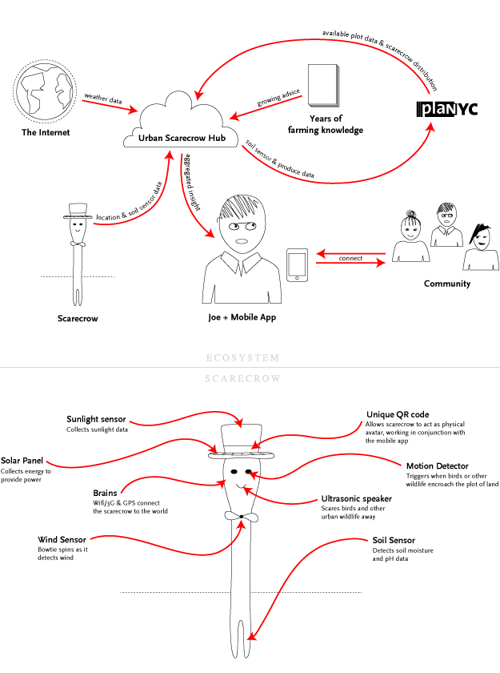
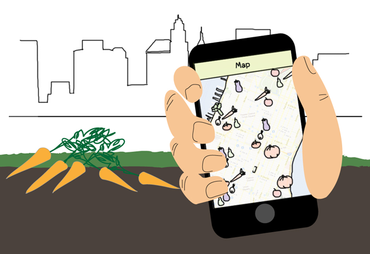
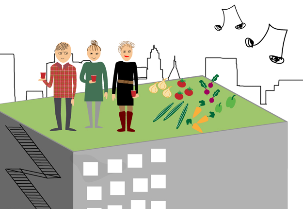

MFA IXD
Urban Scarecrow
An ecosystem (government initiative, iPhone application & physical device) designed to raise awareness, educate and support urban farming in New York City.
In January 2012, New York City’s Department of City Planning proposed opening up 1,200 acres of commercial rooftop space for public use. Using this as a starting point we interviewed expert and novice farmers to establish potential design opportunities. Our research identified four key problems:
- Limited time to care for crops
- Lack of community support
- Low awareness of farming opportunities
- Lack of education on how to get started
Focusing on the novice farmer our solution leverages multiple touchpoints to create a cohesive educational tool and community platform. Inspired by the role of the traditional scarecrow, we wanted to re-imagine how technology could facilitate and inspire people to take up urban farming and help make New York a more sustainable city.
View Presentation Slides
View One-Page Summary
This was a 6-week collaboration with Guri Venstad, Minnie Choi and Minseung Song as part of Jill Nussbaum‘s Design in Public Spaces class.
Thumbnail photo credit: Gonzlaught